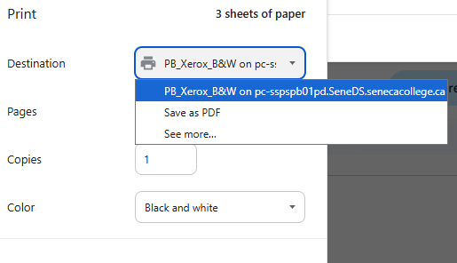
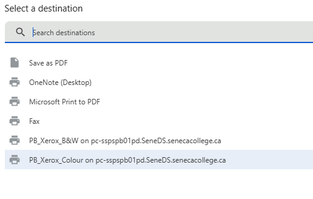

🖨️ Student Printer Connection Guide
Follow these steps to connect and print at Peterborough
1
Search for STUDENT PRINTER.bat
Use the Windows key or the search bar in the bottom left to search for "STUDENT PRINTER.bat" and open it.


2
Wait for Connection
Wait approximately 30 seconds while the printer connects until the popup closes.
3
Select Printer Destination
Select PB_Xerox_B&W as the destination (or look for PB_Xerox_Colour for coloured printing).


4
Scan Your Seneca OneCard
After selecting your printing options, go to the printer and scan your Seneca OneCard.
Tip: You must have funds in your account to print
(5¢ per black and white page, 20¢ per coloured page).
Load funds into your account.
5
Enter PIN and Print
Enter PIN '1234' and select your document to print.